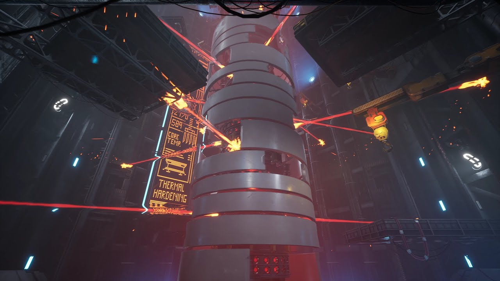
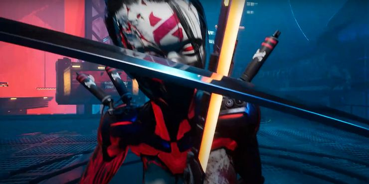
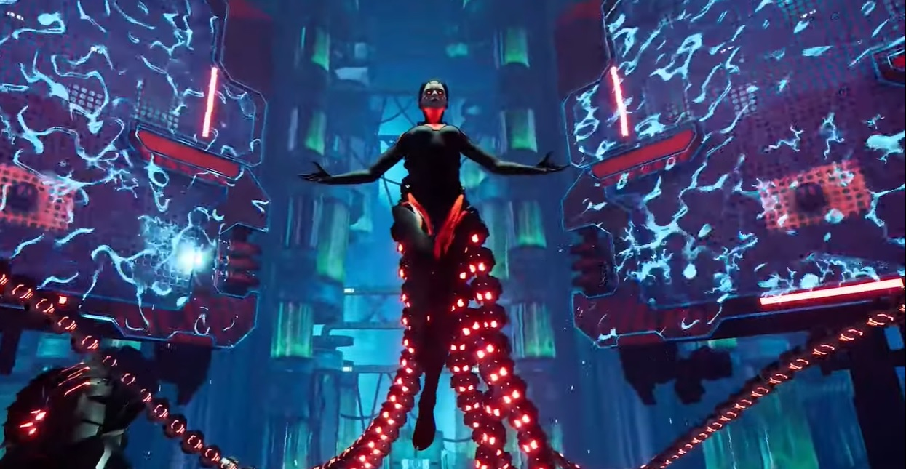

|  | Tom is a tower that spins and fires laser beams which you have to dodge while climbing to te top to cut the power cable, you have to do this three times, each time it gets more difficult as deadly shockwaves and electricity appear to kill you. |
|  | Hel is a creation by Mara, the creation is supposed to mimic the Ghostrunner however this is done poorly. You defeat her by parrying (attacking at the same time she hits you) her attacks then attacking her. you must do this three times. The only thing that changes is her moves each phase. |
|  | Mara is the final boss to the game. She has multiple tentacles she sweeps the floor with and lunges at you. the floor will also periodically become electrical and cause death upon contact. avoid this by dodging Mara's tentacles and grapple to the nearby walls when the floor becomes electric. Damage her by positioning yourself in front of a generator. dodge attacks trying to maintain the position, when she uses her lunge attack, dodge it and she should hit the generator. This will cause her tentacle to get stuck allowing you to slash it with your sword. Rinse and repeat until victory. |